Arthur Kowara
The first step in the image processing was converting the image to grayscale to allow each plate to be a single array which allows for these image processing techniques. After an image is converted to grayscale the next step was to remove as much of the white border that surrounds the image strip. To accomplish this, initially each row and column that contained only white pixels to a certain threshold was removed from the image. The purpose of this was to make the image easier to split accurately into even thirds in the next steps and as well as remove some of the fluff of the borders which each raw image contains.
A black background was added here to show the removal of the white border.
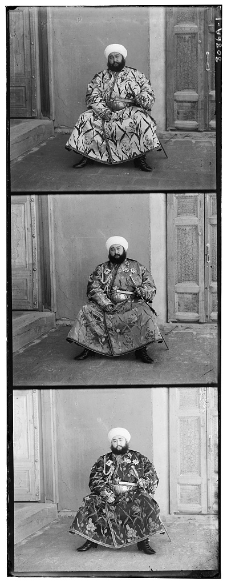
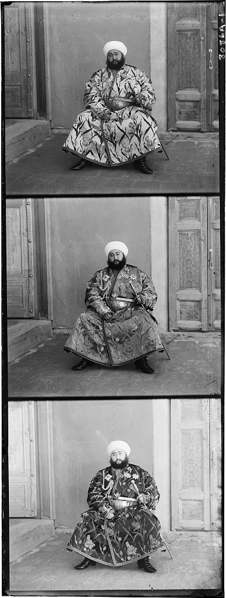
The next step was to split the image into even thirds and this was done by simply dividing the image height by three and keeping the width the same. In the case that the height was not divisible by three, one row was removed from each image that contained an extra row to allow for easier merging and alignment down the line.
Using the blue scale as the alignment scale, the red and green scales were looped through and compared to the blue scale. For the comparison, a shift size ranging between -15 and 15 for the x and y axis was applied to the green and red scale. Each possible shift was compared to the original blue scale for each of the other two scales and given a score using the euclidean distance or normalized cross correlation. The shifting technique allows for the pixels to wrap around the axes to preserve the image for fair comparison. The shifts that resulted in the best scores were preserved and used in the merger to create the final image. This technique worked quite well for the smaller images but did not work well for larger images as not only did it take a long time, but also the scales were not aligned well, as negative fifteen to fifteen is not a big enough search window.
The image of the train is the larger image which looks good at this size but when looking at the full size image it was not able to align the channels properly. The other image is smaller and correctly merged.
For the most part, the NCC and L2 algorithms produce similar results with similar time complexity. However, when it comes to the Emir image, NCC fails to align properly due to the different channels having different brightness values. This problem is fixed with the L2 comparison or when using the NCC comparison with an edge map.
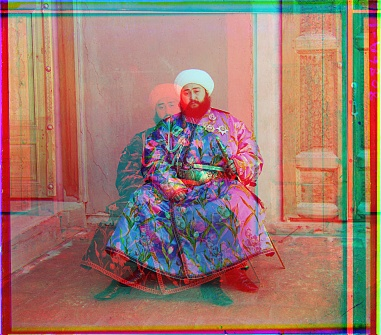
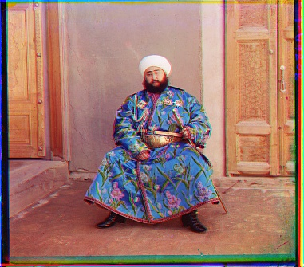
To solve the issues with time and alignment quality when working with high-resolution images, a multi-scale alignment approach of an image pyramid was implemented. This algorithm downsamples versions of the image until reaching a desired low-resolution image. Then starting at the lowest resolution image, a standard single-scale search (-15 to 15) is performed to estimate an initial shift. After finding an initial shift the image is upscaled one level and has the desired shift applied to it. Once applied, another single-scale search is applied using a smaller window (-2 to 2) and this process continues until the image is back to its original size.
This recursive process significantly reduces the search space while allowing for effective alignment for larger higher resolution images resulting in accurate merger of each colour scale. This alignment struggles on examples when a colour is bright on one plate, but dark on another plate.
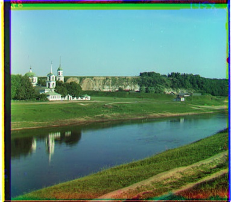
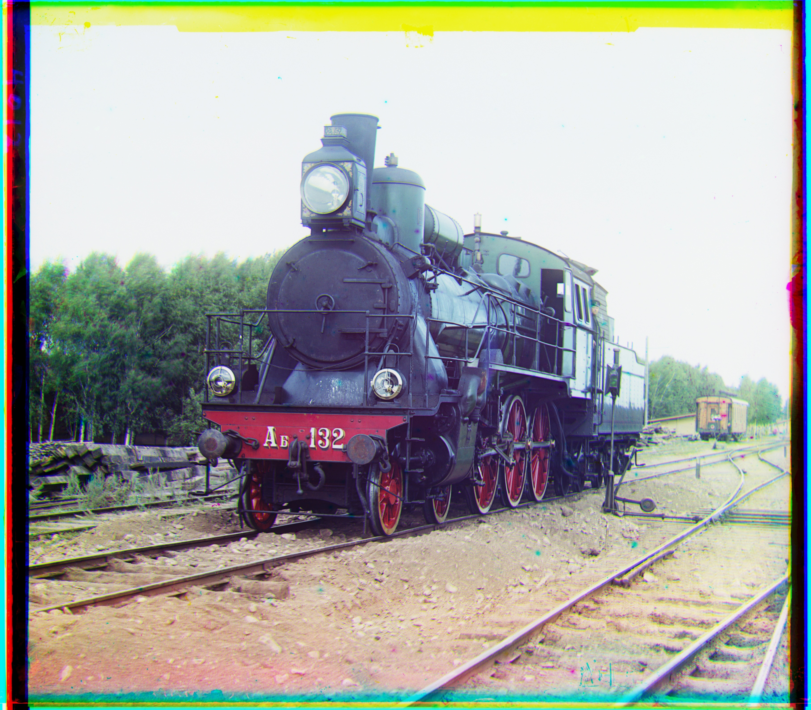
When stretched now the train image is properly aligned while being able to finish the search in much less than a minute. While the smaller image looks very similar to the naked eye.
Similar to the multi-scale alignment recursive downsampling and upsampling behavior except it compares the edge strength of each colour plate instead of brightness of each pixel. This technique is a bit slower than the other multi-scale alignment due to the computation of an edge map, but improves on the shortcomings on the Emir image.

Uses the estimated alignment shifts to determine the inner boundary limits across all color channels. By trimming the excess overlap outside these limits, it automatically removes some color-fringing and edge artifacts from the coloured image.
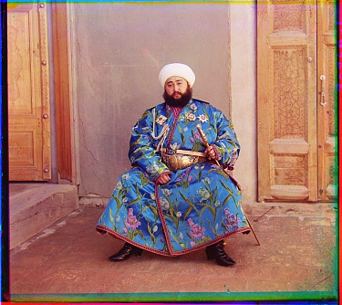
Automatically detects and trims unwanted borders by reducing the image to average intensity profiles for every row and column. Each line is flagged as border if it is near-black, near-white, or differs noticeably from the median of the lines just inside it, and the border ends once a short run of consecutive clean lines is found.

Finds the low and high intensity pixel cutoffs, which are the brightest and
darkest pixels, then normalizes the pixels to range from pure black to pure white. The cutoffs are
computed across all channels together, so colour balance is preserved. The low_pct and
high_pct flags clip a percentage of the pixels, removing outliers.
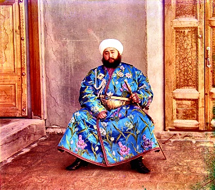
The merger consisted of stacking the aligned blue, green and red scales on the depth axis in the appropriate order to create the final colourful image.
A full gallery of every image processed with both comparison metrics at each stage of the pipeline is available on the results gallery page:
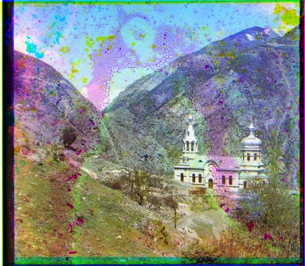
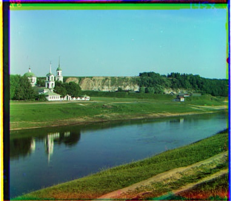
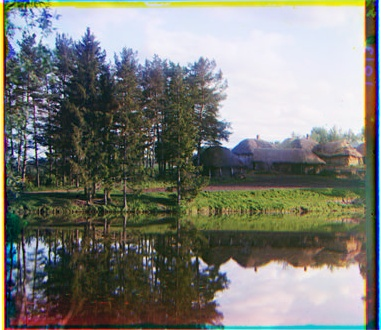
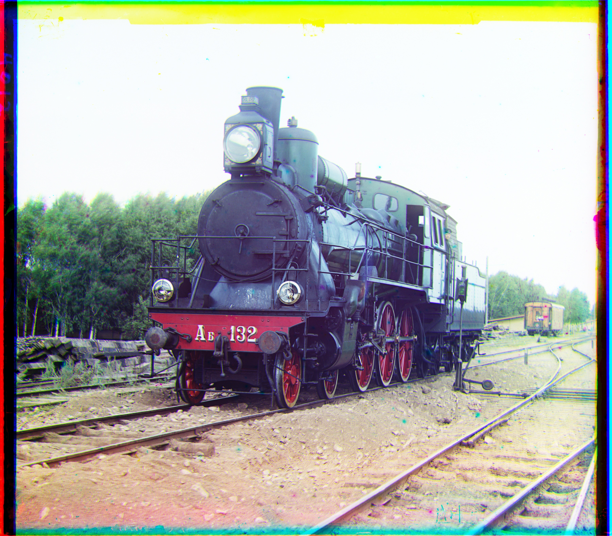
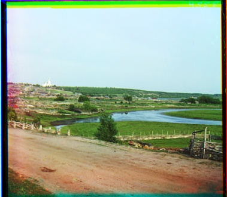
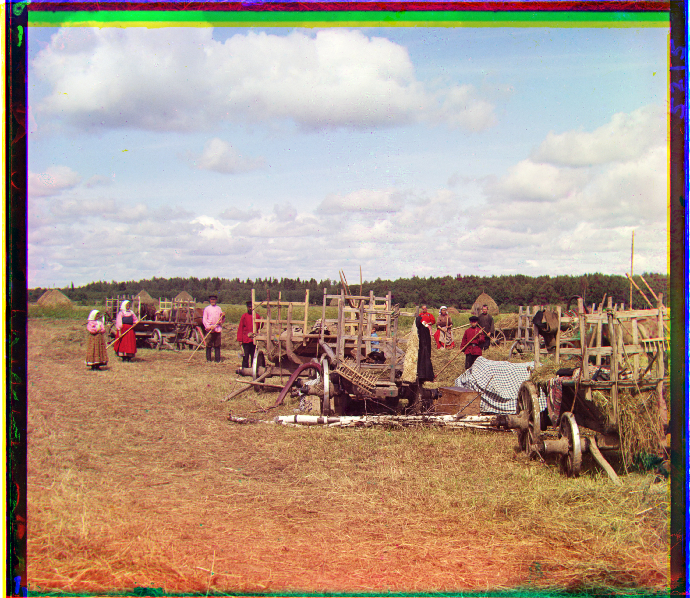
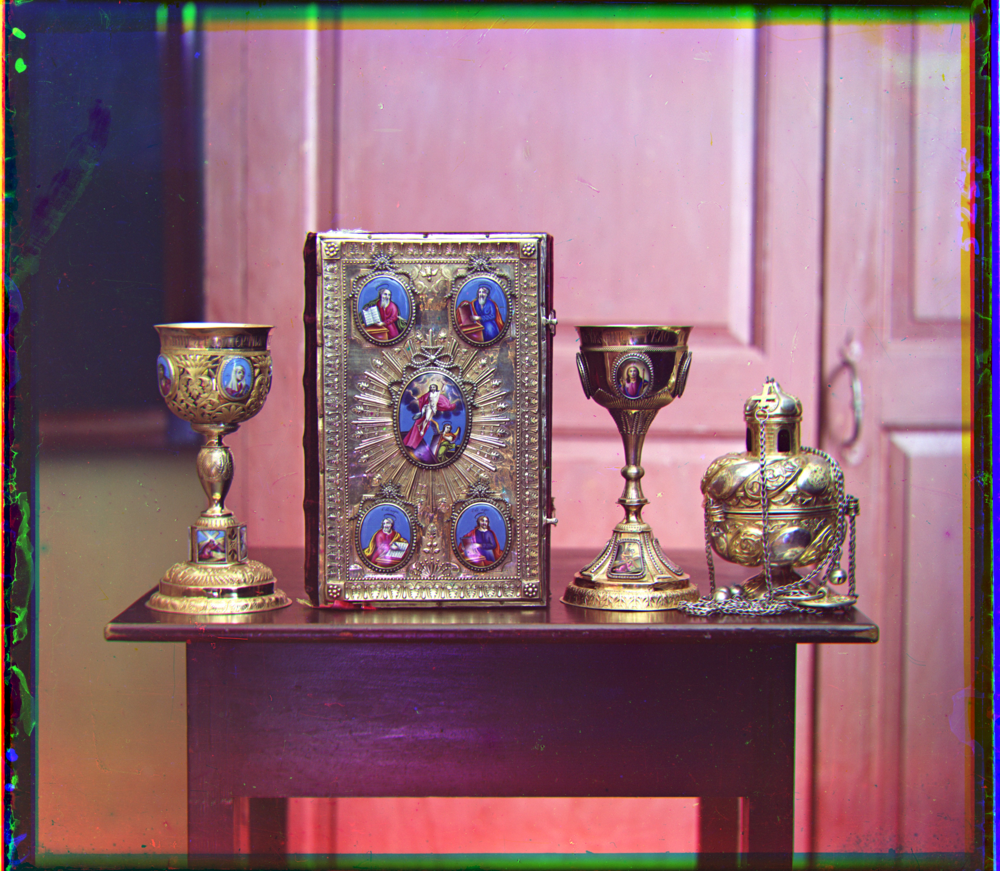
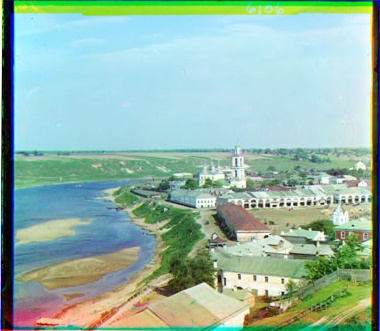
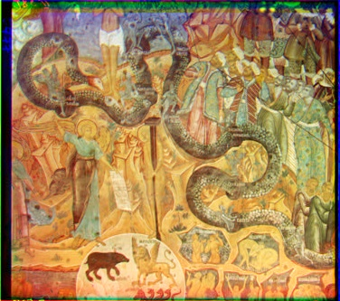
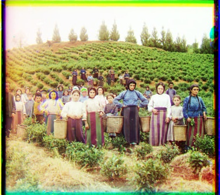
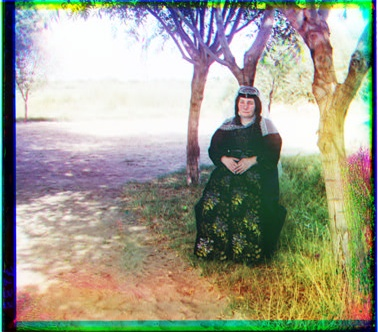
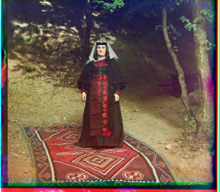
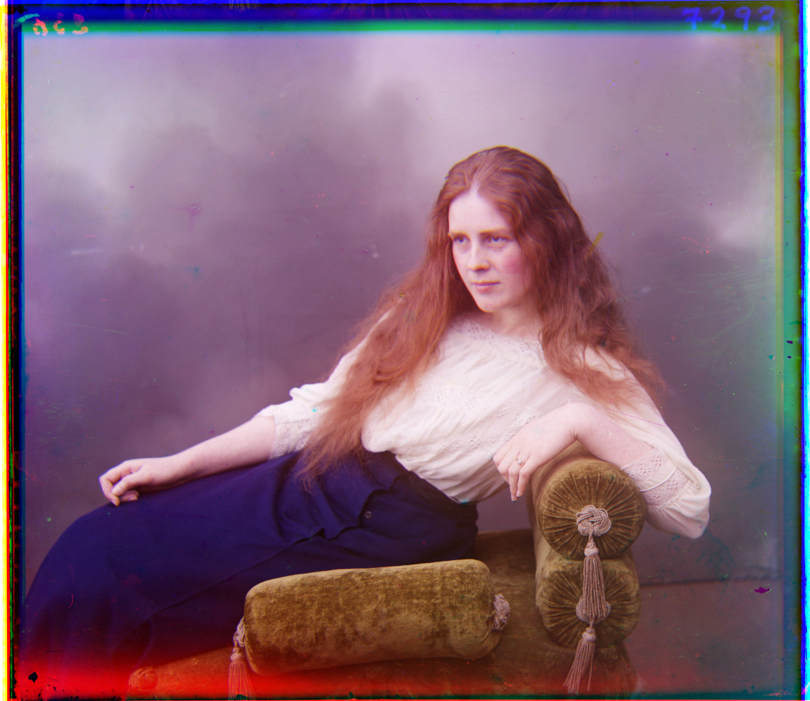
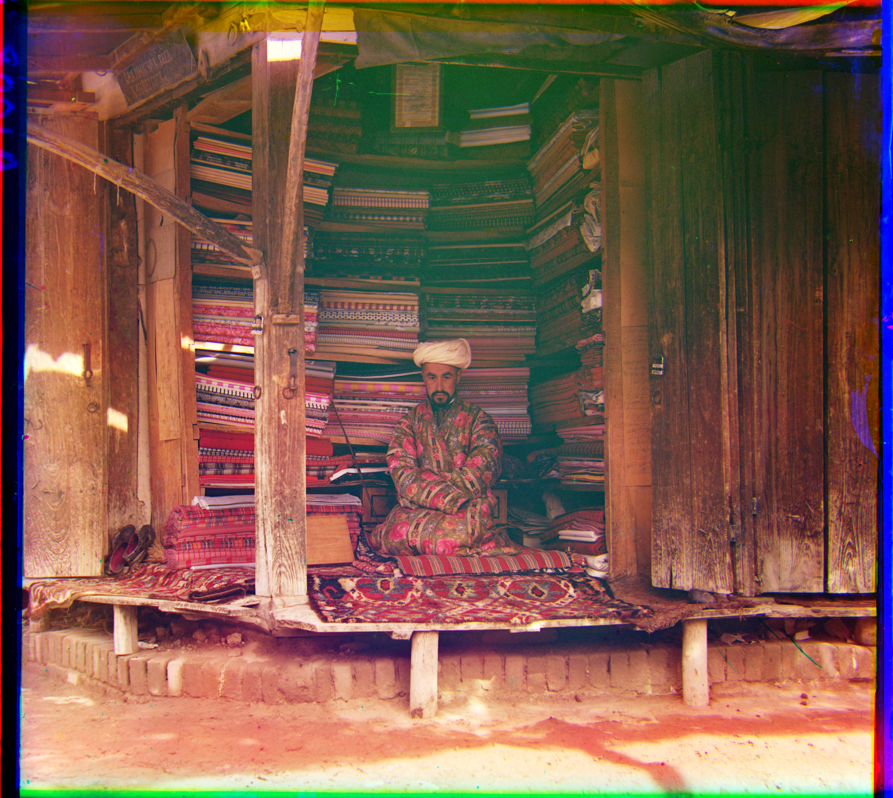
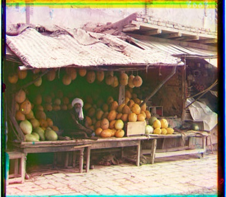
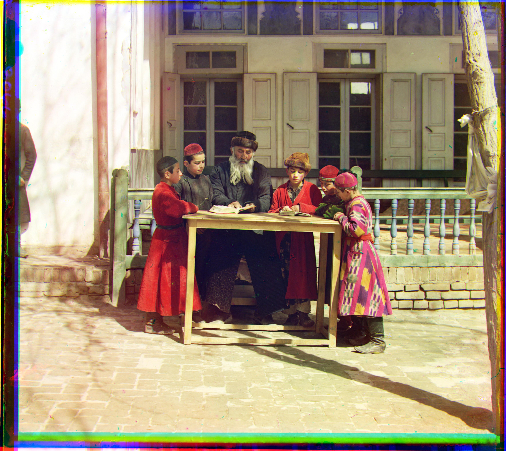
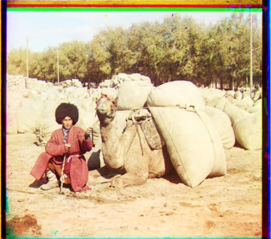
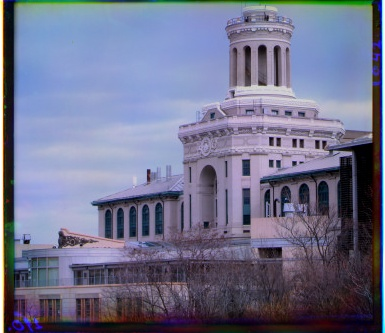
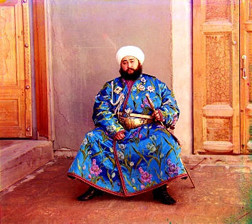